Historic Win in 2006
The 2006 UEFA Champions League final was an association football match between Barcelona of Spain and Arsenal of England at the Stade de France in Saint-Denis, Paris, France, on Wednesday, 17 May 2006. It was the final match of the 2005–06 season of Europe's primary cup competition, the UEFA Champions League.
{kind=link}
![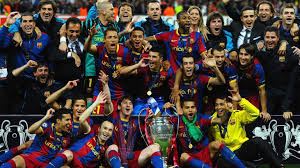 Historic Win in 2011 The 2011 UEFA Champions League final was an association football match played on 28 May 2011 at Wembley Stadium in London that decided the winner of the 2010–11 season of the UEFA Champions League. The winners received the European Champion Clubs' Cup (the European Cup). The 2011 final was the culmination of the 56th season of the tournament, and the 19th in the Champions League era. 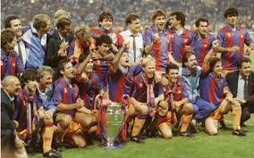 Historic Win in 1992 The 1992 European Cup final was a football match held on 20 May 1992 at Wembley Stadium, London, between Sampdoria of Italy and Barcelona of Spain. Barcelona won the game 1–0 after extra time, thanks to a Ronald Koeman free kick, to record their first triumph in the competition. 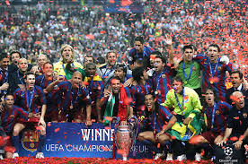 Historic Win in 2006 The 2006 UEFA Champions League final was an association football match between Barcelona of Spain and Arsenal of England at the Stade de France in Saint-Denis, Paris, France, on Wednesday, 17 May 2006. It was the final match of the 2005–06 season of Europe's primary cup competition, the UEFA Champions League. 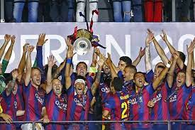 Historic Win in 2015 The 2015 UEFA Champions League final was the final match of the 2014–15 UEFA Champions League, the 60th season of Europe's premier club football tournament organised by UEFA, and the 23rd season since it was renamed from the European Champion Clubs' Cup to the UEFA Champions League. It was played at the Olympiastadion in Berlin, Germany, on 6 June 2015, between Italian side Juventus and Spanish side Barcelona. 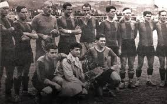 First Win in Laliga Barcelona won the title after beating Real Unión in the last round and taking advantage of the loss of Real Madrid at Athletic Bilbao. 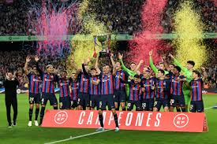 Last Win in Laliga The 2023–24 La Liga, also known as LaLiga EA Sports[3][4] due to sponsorship reasons, was the 93rd season of La Liga, Spain's premier football competition. It commenced on 11 August 2023 and ended on 26 May 2024. Barcelona were the defending champions, having won their 27th title the previous season.](lk.jpg){kind=link}
![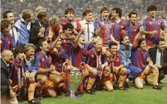 Historic Win in 1992 The 1992 European Cup final was a football match held on 20 May 1992 at Wembley Stadium, London, between Sampdoria of Italy and Barcelona of Spain. Barcelona won the game 1–0 after extra time, thanks to a Ronald Koeman free kick, to record their first triumph in the competition. 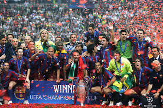 Historic Win in 2006 The 2006 UEFA Champions League final was an association football match between Barcelona of Spain and Arsenal of England at the Stade de France in Saint-Denis, Paris, France, on Wednesday, 17 May 2006. It was the final match of the 2005–06 season of Europe's primary cup competition, the UEFA Champions League. 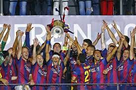 Historic Win in 2015 The 2015 UEFA Champions League final was the final match of the 2014–15 UEFA Champions League, the 60th season of Europe's premier club football tournament organised by UEFA, and the 23rd season since it was renamed from the European Champion Clubs' Cup to the UEFA Champions League. It was played at the Olympiastadion in Berlin, Germany, on 6 June 2015, between Italian side Juventus and Spanish side Barcelona. 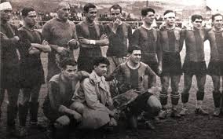 First Win in Laliga Barcelona won the title after beating Real Unión in the last round and taking advantage of the loss of Real Madrid at Athletic Bilbao. 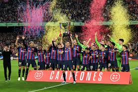 Last Win in Laliga The 2023–24 La Liga, also known as LaLiga EA Sports[3][4] due to sponsorship reasons, was the 93rd season of La Liga, Spain's premier football competition. It commenced on 11 August 2023 and ended on 26 May 2024. Barcelona were the defending champions, having won their 27th title the previous season.](ik.jpg){kind=link}
{kind=link}
![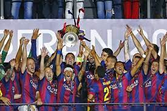 Historic Win in 2015 The 2015 UEFA Champions League final was the final match of the 2014–15 UEFA Champions League, the 60th season of Europe's premier club football tournament organised by UEFA, and the 23rd season since it was renamed from the European Champion Clubs' Cup to the UEFA Champions League. It was played at the Olympiastadion in Berlin, Germany, on 6 June 2015, between Italian side Juventus and Spanish side Barcelona. 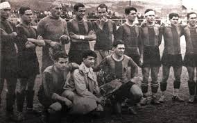 First Win in Laliga Barcelona won the title after beating Real Unión in the last round and taking advantage of the loss of Real Madrid at Athletic Bilbao. 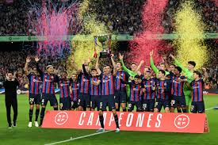 Last Win in Laliga The 2023–24 La Liga, also known as LaLiga EA Sports[3][4] due to sponsorship reasons, was the 93rd season of La Liga, Spain's premier football competition. It commenced on 11 August 2023 and ended on 26 May 2024. Barcelona were the defending champions, having won their 27th title the previous season.](hk.jpg){kind=link}
![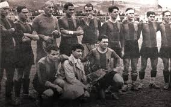 First Win in Laliga Barcelona won the title after beating Real Unión in the last round and taking advantage of the loss of Real Madrid at Athletic Bilbao. 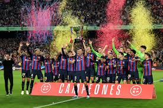 Last Win in Laliga The 2023–24 La Liga, also known as LaLiga EA Sports[3][4] due to sponsorship reasons, was the 93rd season of La Liga, Spain's premier football competition. It commenced on 11 August 2023 and ended on 26 May 2024. Barcelona were the defending champions, having won their 27th title the previous season.](lp.jpg){kind=link}
![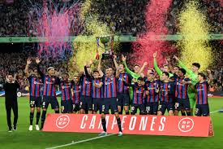 Last Win in Laliga The 2023–24 La Liga, also known as LaLiga EA Sports[3][4] due to sponsorship reasons, was the 93rd season of La Liga, Spain's premier football competition. It commenced on 11 August 2023 and ended on 26 May 2024. Barcelona were the defending champions, having won their 27th title the previous season.](nl.jpg){kind=link}